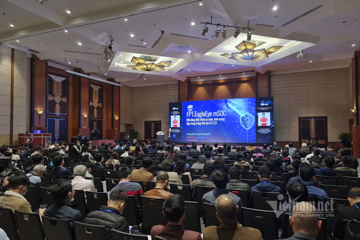

Đó là tinh thần được nêu ra tại sự kiện Ngày An toàn thông tin Việt Nam 2020 diễn ra ngày 2/12. Diễn đàn quan trọng cấp quốc gia lần thứ 13 này có chủ đề: “An toàn, an ninh mạng Make in Vietnam – Yếu tố then chốt trong Chuyển đổi số quốc gia”, với thông điệp mạnh mẽ về việc làm chủ công nghệ và sử dụng các sản phẩm, dịch vụ an toàn, an ninh mạng (ATANM) Việt Nam để phục vụ chuyển đổi số quốc gia.
Hội thảo - triển lãm quốc tế Ngày An toàn thông tin Việt Nam là sự kiện thường niên do Hiệp hội An toàn thông tin Việt Nam (VNISA) chủ trì, phối hợp với Cục An toàn thông tin (Bộ TT&TT) tổ chức, dưới sự bảo trợ của Bộ TT&TT.
Trong năm 2020, năm thứ 13 được tổ chức, sự kiện này có chủ đề “An toàn, an ninh mạng Make in Vietnam – Yếu tố then chốt trong Chuyển đổi số quốc gia”.
Được tổ chức theo hình thức kết hợp giữa mô hình trực tiếp và trực tuyến, hội thảo và triển lãm quốc tế Ngày An toàn thông tin Việt Nam năm nay nhằm góp phần thúc đẩy làm chủ công nghệ và sử dụng sản phẩm, dịch vụ an toàn, an ninh mạng Việt Nam phục vụ công cuộc chuyển đổi số quốc gia.

| Hội thảo - Triển lãm quốc tế Ngày An toàn thông tin Việt Nam 2020. |
An toàn an ninh mạng sẽ tạo ra niềm tin số Việt Nam
Bộ trưởng Bộ Thông tin & Truyền thông (TT&TT) Nguyễn Mạnh Hùng khẳng định, sứ mệnh của ATANM Việt Nam là bảo vệ sự thịnh vượng của Việt Nam trên không gian mạng.
Để làm tốt việc này, chúng ta phải làm chủ hệ sinh thái các sản phẩm ATANM, phải xây dựng được một nền công nghiệp ATANM hùng mạnh.
Việt Nam đã làm chủ 90% hệ sinh thái các sản phẩm ATANM phục vụ các cơ quan Đảng, Nhà nước. Đến đầu năm 2021, Việt Nam sẽ làm chủ 100% các dịch vụ này. Đây là niềm tự hào Việt Nam bởi rất ít nước trên thế giới có thể làm được.
| Bộ trưởng Bộ Thông tin & Truyền thông (TT&TT) khẳng định, sứ mệnh của ATANM Việt Nam là bảo vệ sự thịnh vượng của Việt Nam trên không gian mạng. |
Theo Bộ trưởng Nguyễn Mạnh Hùng, niềm tin số sẽ trở thành yếu tố quyết định cho sự di chuyển từ thế giới thực sang thế giới ảo. Nhiều quốc gia đã tuyên bố chỉ mua công nghệ khi công nghệ là mở, nhất là khi các công nghệ đó được sử dụng để xây dựng các hạ tầng nền tảng quốc gia.
Việt Nam phát triển công nghệ 5G dựa trên chuẩn mở Open RAN. Mạng 5G Việt Nam cũng sẽ dùng nguồn mở. Đây là một thuận lợi cho các doanh nghiệp ATANM Việt Nam.
Các doanh nghiệp ATANM phải hợp tác chặt chẽ ngay từ đầu với các doanh nghiệp phát triển sản phẩm và dịch vụ ICT để các sản phẩm, dịch vụ và hệ thống ICT được đảm bảo an toàn ở mức cao nhất.
Chúng ta phải xây dựng một đội ngũ chuyên gia về an toàn an ninh mạng làm nòng cốt. Riêng về lĩnh vực ATANM, các chuyên gia giỏi và nền công nghiệp là yếu tố quan trọng ngang nhau.
Ngoài doanh nghiệp và công cụ, cần phải có các cá nhân xuất sắc. Vì công cụ chỉ xử lý được các lỗ hổng đã biết. Những lỗ hổng chưa biết chỉ có các chuyên gia mới xử lý được.